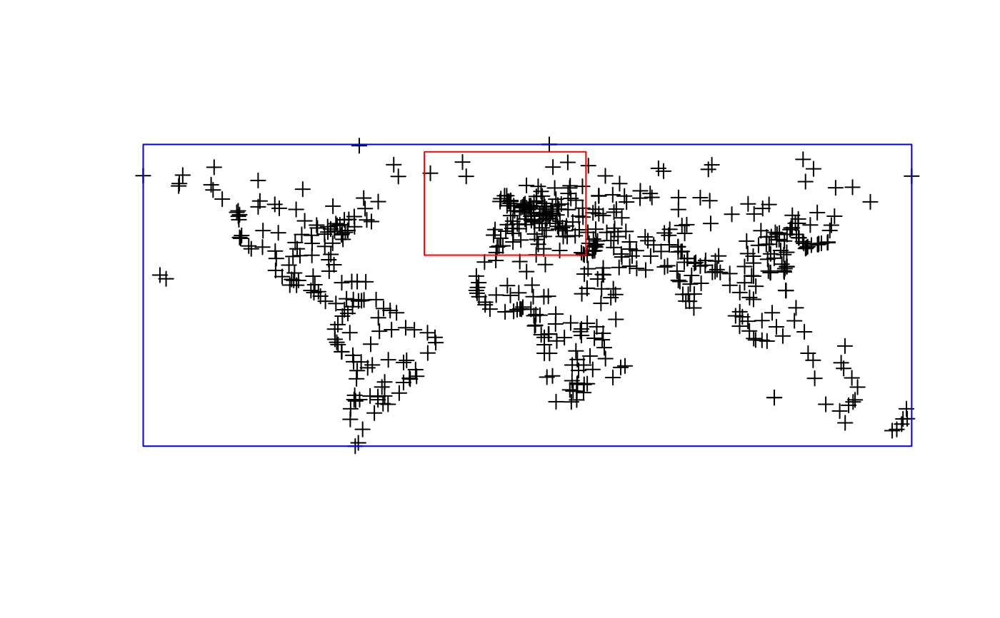

bbox2SP.RdConverts a bounding box into a SpatialPolygons object.
bbox2SP(n,s,w,e,bbox=NA,proj4string=CRS("+init=epsg:4326"))This function converts a set of coordinates limiting a bounding box into a SpatialPolygons. It can be used for instance to clip a subset of a larger spatial object (e.g. using gIntersection)
An object of SpatialPolygons class.
library(sp)
run <- FALSE
if (require(rgdal, quietly=TRUE)) run <- TRUE
#> Please note that rgdal will be retired by the end of 2023,
#> plan transition to sf/stars/terra functions using GDAL and PROJ
#> at your earliest convenience.
#>
#> rgdal: version: 1.5-27, (SVN revision 1155)
#> Geospatial Data Abstraction Library extensions to R successfully loaded
#> Loaded GDAL runtime: GDAL 3.4.0, released 2021/11/04
#> Path to GDAL shared files: /usr/local/share/gdal
#> GDAL binary built with GEOS: TRUE
#> Loaded PROJ runtime: Rel. 8.2.0, November 1st, 2021, [PJ_VERSION: 820]
#> Path to PROJ shared files: /home/rsb/.local/share/proj:/usr/local/share/proj:/usr/local/share/proj
#> PROJ CDN enabled: FALSE
#> Linking to sp version:1.4-6
#> To mute warnings of possible GDAL/OSR exportToProj4() degradation,
#> use options("rgdal_show_exportToProj4_warnings"="none") before loading sp or rgdal.
if (run) {
cities <- readOGR(dsn=system.file("vectors", package = "rgdal")[1], layer="cities")
n<-75
s<-30
w<--40
e<-32
myPoly<-bbox2SP(n,s,e,w)
}
#> OGR data source with driver: ESRI Shapefile
#> Source: "/home/rsb/lib/r_libs/rgdal/vectors", layer: "cities"
#> with 606 features
#> It has 4 fields
#> Integer64 fields read as strings: POPULATION
if (run) {
plot(cities)
plot(myPoly,border="red",add=TRUE)
}
if (run) {
bb<-bbox(cities)
myPoly<-bbox2SP(bbox=bb,proj4string=CRS(proj4string(cities)))
plot(myPoly,add=TRUE,border="blue")
}
#> Warning: CRS object has comment, which is lost in output; in tests, see
#> https://cran.r-project.org/web/packages/sp/vignettes/CRS_warnings.html
